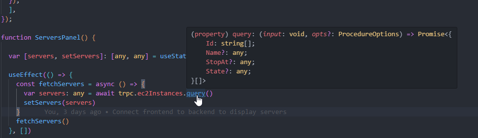
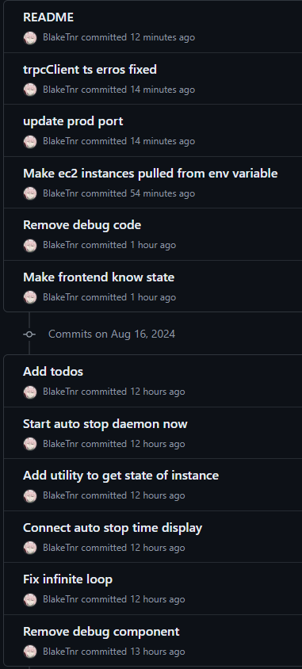

This is a panel that allows you to stop, start, view status, and manage your EC2 instances from a simple web panel. Great for non-technical folk!
I made this for a couple reasons
I thought TRPC was absolutely amazing, mainly beacuse of the auto completion it provides
Not only this, TRPC suggests using a monolith repo which allowed me to switch back and forth to develop features extremely fast
(All of these commits where completed very close to each other)
I've used REST and GraphQL (though not OpenAPI), but REST and GraphQL not providng typing of any sort makes developing extremely annoying.
GraphQL you constantly have to reference the schema (annoying)
And REST is even worse where you need to know the endpoint
I am aware that there are probably ways to fix this, but TRPC just works out of the box.
I have use Horizon UI, ChakraUI, MaterialUI, ShadCN/UI.
I would have to say Tailwind is great as it helps to solidfy your knowledge of HTML and CSS while giving you the ability to quickly create sites that feel very custom, as opposed to the first 3 above.
I never actually was able to practically test if I ended up saving money, but theoretically this should help save quite a bit of money for me running my silly minecraft server.